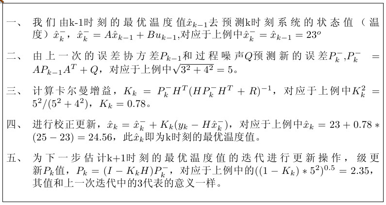

假设我们要研究一个房间的温度，以一分钟为时间单位。
根据我们的经验判断，这个房间的温度是恒定的。但是我们对我们自己的经验并不是完全的信任，可
能存在上下几度的偏差。我们需要把这个偏差看做是高斯白噪声。另外，在房间里放置一个温度计。温度计也并非完全准确，测量值会与实际值存在一定偏差。我们把这偏差也看做是高斯白噪声。现在，我们要根据以上信息来估算出房间的实际温度。
Step 1: 假设在t−1时刻我们预测房间的温度为23度，预测的误差为3度。假设它是服从高斯分布，我们将3度视为温度标准差。
Step 2: 根据我们的经验，在没有外界干扰的情况下房间的温度将会恒定不变。于是我们预测在tt时刻房间的温度为23度。但是预测本身也会存在误差。我们把这个误差看做是服从高斯分布。假设其标准差为4度。值得一提的是对于4度和3度，两个高斯分布是相互独立的。综合这两个高斯分布，通过我们的经验可以得到tt时刻的气温为23度，其标准差为5度 (\(5 = \sqrt{3^2+4^2}\)) 。
Step 3: 为了更精准的测量室内温度，我们会使用温度计去测量温度。在t时刻温度计的读数为25度。温度计的误差为4度，其服从高斯分布。
Step 4: 此时我们对tt时刻的气温值有两个估计，一个是人为经验的预测，另一个是温度计测量读数。它们的误差都服从高斯分布且相互独立。我们将其进行加权求得我们最终的估计值。通过一系列计算，我们最终算的房间温度为24.56度，误差为2.35度。
Step 5: 将Step 4中算出的结果作为t时刻的最终结果，重复Step 1至Step 4便可以算出以后任意时刻房间的气温。
在这个例子中我们可以发现所有的误差都是服从高斯分布，且都相互独立。这便是卡尔曼滤波的一个先决条件。有意思的是如果我们没有温度计，一切全靠人为经验进行判断，随着不断的迭代，最终我们的估计值的误差会越来越大。如果我们只有温度计不进行人为判断，我们所测量的温度永远都会受到温度计误差的影响，特别是温度计误差过大时，我们测量值往往并不让人满意。但是同时参考人为估计和温度计测量，最终的估计值误差总能保持一个微妙的平衡。下面我们开始正式的讨论卡尔曼滤波。
卡尔曼滤波主要包括两个过程：先验状态估计（时间更新）和后验估计（量测更新）。包括五个重要公式，下图是结合五个重要公式和上面测温的例子对卡尔曼滤波进行说明：
When \(a \ne 0\), there are two solutions to \(ax^2 + bx + c = 0\) and they are $$x = {-b \pm \sqrt{b^2-4ac} \over 2a}.$$